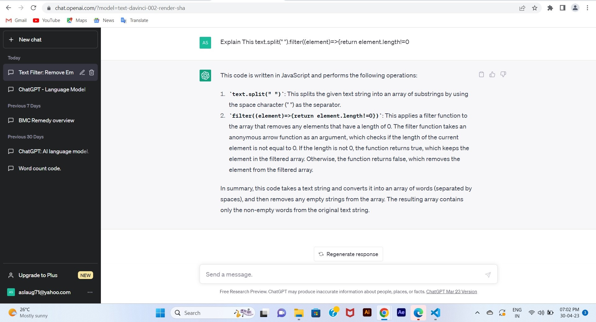

चैटजीपीटी एक बड़ा लैंग्वेज मॉडल हैं जो ओपनएआई द्वारा बनाया गया हैं
यह एक वेबसाइट है जिसे हम गूगल सर्च इंजन पर इंटर कर प्राप्त कर सकते हैं इस लिंक के द्वारा (chat.openai.com) आप ChatGPT पर पहुंच जायेंगे।
ChatGPT मूलतः नेचुरल लैंग्वेज प्रोसेसिंग (एनएलपी) के काम आता हैं यह आपकी बातों को समझ पाता हैं, चैटजीपीटी किसी भी व्यक्ति के लिए है जो अपने प्रश्न का उत्तर ढूंढ रहा है, या जो किसी विषय पर अधिक ज्ञान प्राप्त करना चाहता है। यह एक एआई-बेस्ड लैंग्वेज मॉडल हूं जो अपने यूजर्स के प्रश्नों के उत्तर देने में मदद करता है।
ChatGPT प्रोग्रामर्स के लिए भी एक उपयोगी उपकरण हो सकता है। सॉफ़्टवेयर डेवलपमेंट में, प्रोग्रामर अक्सर किसी बग या सिन्टेक्स पर अटक जाते है ऐसे में हम अपने सिंटेक्स को ChatGPT पर डाल कर उसका समाधान प्राप्त कर सकते है ChatGPT त्वरित और आसान उत्तर प्रदान कर सकता है। चैटजीपीटी प्रोग्रामर्स को सॉफ्टवेयर डेवलपमेन्ट में सभी नवीनतम रुझानों और सर्वोत्तम प्रथाओं के साथ-साथ विभिन्न प्रोग्रामिंग भाषाओं और रूपरेखाओं पर मार्गदर्शन प्रदान करने में मदद कर सकता है।
हम आपकी सहायता के लिए एक इमेज सलंग्न कर रहे है , कैसे आप अपनी प्रश्नों को ChatGPT से पूछ कर उसका उत्तर पा सकते हैं।

चैटजीपीटी एक एआई (आर्टिफिशियल इंटेलिजेंस) भाषा मॉडल है। यह एक ऐसा मॉडल है जिसमें Human Like Intelligence और Decision लेने की क्षमता है।